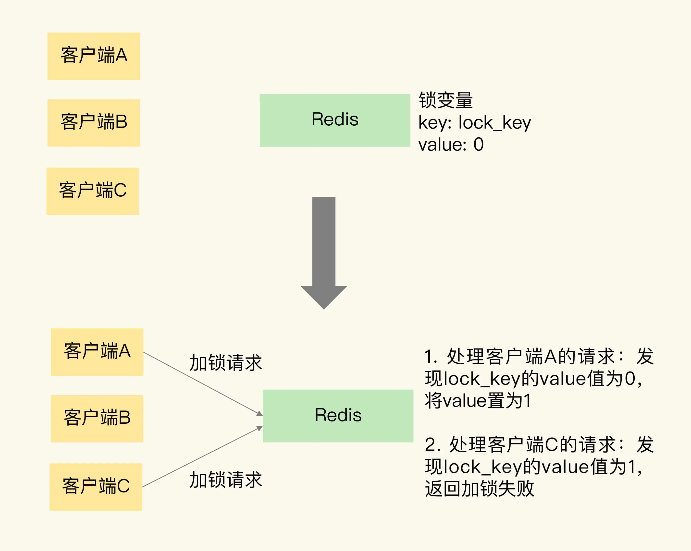
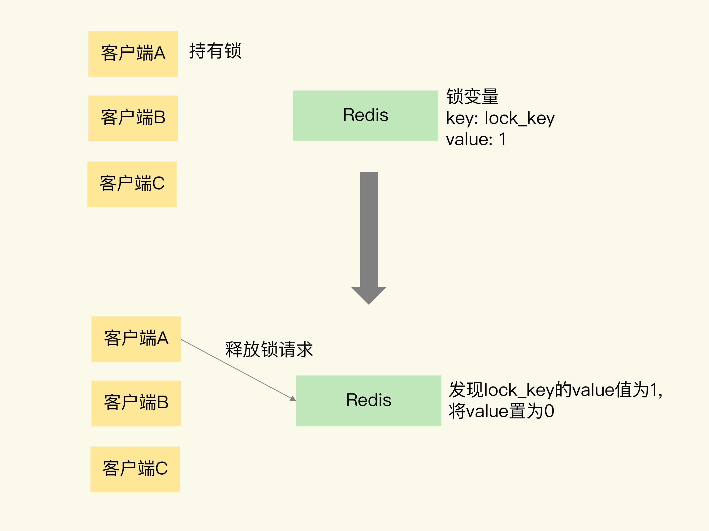

- 00 开篇词 这样学Redis，才能技高一筹.md.html
- 01 基本架构：一个键值数据库包含什么？.md.html
- 02 数据结构：快速的Redis有哪些慢操作？.md.html
- 03 高性能IO模型：为什么单线程Redis能那么快？.md.html
- 04 AOF日志：宕机了，Redis如何避免数据丢失？.md.html
- 05 内存快照：宕机后，Redis如何实现快速恢复？.md.html
- 06 数据同步：主从库如何实现数据一致？.md.html
- 07 哨兵机制：主库挂了，如何不间断服务？.md.html
- 08 哨兵集群：哨兵挂了，主从库还能切换吗？.md.html
- 09 切片集群：数据增多了，是该加内存还是加实例？.md.html
- 10 第1～9讲课后思考题答案及常见问题答疑.md.html
- 11 “万金油”的String，为什么不好用了？.md.html
- 12 有一亿个keys要统计，应该用哪种集合？.md.html
- 13 GEO是什么？还可以定义新的数据类型吗？.md.html
- 14 如何在Redis中保存时间序列数据？.md.html
- 15 消息队列的考验：Redis有哪些解决方案？.md.html
- 16 异步机制：如何避免单线程模型的阻塞？.md.html
- 17 为什么CPU结构也会影响Redis的性能？.md.html
- 18 波动的响应延迟：如何应对变慢的Redis？（上）.md.html
- 19 波动的响应延迟：如何应对变慢的Redis？（下）.md.html
- 20 删除数据后，为什么内存占用率还是很高？.md.html
- 21 缓冲区：一个可能引发“惨案”的地方.md.html
- 22 第11～21讲课后思考题答案及常见问题答疑.md.html
- 23 旁路缓存：Redis是如何工作的？.md.html
- 24 替换策略：缓存满了怎么办？.md.html
- 25 缓存异常（上）：如何解决缓存和数据库的数据不一致问题？.md.html
- 26 缓存异常（下）：如何解决缓存雪崩、击穿、穿透难题？.md.html
- 27 缓存被污染了，该怎么办？.md.html
- 28 Pika：如何基于SSD实现大容量Redis？.md.html
- 29 无锁的原子操作：Redis如何应对并发访问？.md.html
- 30 如何使用Redis实现分布式锁？.md.html
- 31 事务机制：Redis能实现ACID属性吗？.md.html
- 32 Redis主从同步与故障切换，有哪些坑？.md.html
- 33 脑裂：一次奇怪的数据丢失.md.html
- 34 第23~33讲课后思考题答案及常见问题答疑.md.html
- 35 Codis VS Redis Cluster：我该选择哪一个集群方案？.md.html
- 36 Redis支撑秒杀场景的关键技术和实践都有哪些？.md.html
- 37 数据分布优化：如何应对数据倾斜？.md.html
- 38 通信开销：限制Redis Cluster规模的关键因素.md.html
- 39 Redis 6.0的新特性：多线程、客户端缓存与安全.md.html
- 40 Redis的下一步：基于NVM内存的实践.md.html
- 41 第35～40讲课后思考题答案及常见问题答疑.md.html
- 加餐 01 经典的Redis学习资料有哪些？.md.html
- 加餐 02 用户Kaito：我是如何学习Redis的？.md.html
- 加餐 03 用户Kaito：我希望成为在压力中成长的人.md.html
- 加餐 04 Redis客户端如何与服务器端交换命令和数据？.md.html
- 加餐 05 Redis有哪些好用的运维工具？.md.html
- 加餐 06 Redis的使用规范小建议.md.html
- 加餐 07 从微博的Redis实践中，我们可以学到哪些经验？.md.html
- 结束语 从学习Redis到向Redis学习.md.html
- 捐赠
30 如何使用Redis实现分布式锁？
上节课，我提到，在应对并发问题时，除了原子操作，Redis 客户端还可以通过加锁的方式，来控制并发写操作对共享数据的修改，从而保证数据的正确性。
但是，Redis 属于分布式系统，当有多个客户端需要争抢锁时，我们必须要保证，这把锁不能是某个客户端本地的锁。否则的话，其它客户端是无法访问这把锁的，当然也就不能获取这把锁了。
所以，在分布式系统中，当有多个客户端需要获取锁时，我们需要分布式锁。此时，锁是保存在一个共享存储系统中的，可以被多个客户端共享访问和获取。
Redis 本身可以被多个客户端共享访问，正好就是一个共享存储系统，可以用来保存分布式锁。而且 Redis 的读写性能高，可以应对高并发的锁操作场景。所以，这节课，我就来和你聊聊如何基于 Redis 实现分布式锁。
我们日常在写程序的时候，经常会用到单机上的锁，你应该也比较熟悉了。而分布式锁和单机上的锁既有相似性，但也因为分布式锁是用在分布式场景中，所以又具有一些特殊的要求。
所以，接下来，我就先带你对比下分布式锁和单机上的锁，找出它们的联系与区别，这样就可以加深你对分布式锁的概念和实现要求的理解。
单机上的锁和分布式锁的联系与区别
我们先来看下单机上的锁。
对于在单机上运行的多线程程序来说，锁本身可以用一个变量表示。
- 变量值为 0 时，表示没有线程获取锁；
- 变量值为 1 时，表示已经有线程获取到锁了。
我们通常说的线程调用加锁和释放锁的操作，到底是啥意思呢？我来解释一下。实际上，一个线程调用加锁操作，其实就是检查锁变量值是否为 0。如果是 0，就把锁的变量值设置为 1，表示获取到锁，如果不是 0，就返回错误信息，表示加锁失败，已经有别的线程获取到锁了。而一个线程调用释放锁操作，其实就是将锁变量的值置为 0，以便其它线程可以来获取锁。
我用一段代码来展示下加锁和释放锁的操作，其中，lock 为锁变量。
acquire_lock(){
if lock == 0
lock = 1
return 1
else
return 0
}
release_lock(){
lock = 0
return 1
}
和单机上的锁类似，分布式锁同样可以用一个变量来实现。客户端加锁和释放锁的操作逻辑，也和单机上的加锁和释放锁操作逻辑一致：加锁时同样需要判断锁变量的值，根据锁变量值来判断能否加锁成功；释放锁时需要把锁变量值设置为 0，表明客户端不再持有锁。
但是，和线程在单机上操作锁不同的是，在分布式场景下，锁变量需要由一个共享存储系统来维护，只有这样，多个客户端才可以通过访问共享存储系统来访问锁变量。相应的，加锁和释放锁的操作就变成了读取、判断和设置共享存储系统中的锁变量值。
这样一来，我们就可以得出实现分布式锁的两个要求。
- 要求一：分布式锁的加锁和释放锁的过程，涉及多个操作。所以，在实现分布式锁时，我们需要保证这些锁操作的原子性；
- 要求二：共享存储系统保存了锁变量，如果共享存储系统发生故障或宕机，那么客户端也就无法进行锁操作了。在实现分布式锁时，我们需要考虑保证共享存储系统的可靠性，进而保证锁的可靠性。
好了，知道了具体的要求，接下来，我们就来学习下 Redis 是怎么实现分布式锁的。
其实，我们既可以基于单个 Redis 节点来实现，也可以使用多个 Redis 节点实现。在这两种情况下，锁的可靠性是不一样的。我们先来看基于单个 Redis 节点的实现方法。
基于单个 Redis 节点实现分布式锁
作为分布式锁实现过程中的共享存储系统，Redis 可以使用键值对来保存锁变量，再接收和处理不同客户端发送的加锁和释放锁的操作请求。那么，键值对的键和值具体是怎么定的呢？
我们要赋予锁变量一个变量名，把这个变量名作为键值对的键，而锁变量的值，则是键值对的值，这样一来，Redis 就能保存锁变量了，客户端也就可以通过 Redis 的命令操作来实现锁操作。
为了帮助你理解，我画了一张图片，它展示 Redis 使用键值对保存锁变量，以及两个客户端同时请求加锁的操作过程。

可以看到，Redis 可以使用一个键值对 lock_key:0 来保存锁变量，其中，键是 lock_key，也是锁变量的名称，锁变量的初始值是 0。
我们再来分析下加锁操作。
在图中，客户端 A 和 C 同时请求加锁。因为 Redis 使用单线程处理请求，所以，即使客户端 A 和 C 同时把加锁请求发给了 Redis，Redis 也会串行处理它们的请求。
我们假设 Redis 先处理客户端 A 的请求，读取 lock_key 的值，发现 lock_key 为 0，所以，Redis 就把 lock_key 的 value 置为 1，表示已经加锁了。紧接着，Redis 处理客户端 C 的请求，此时，Redis 会发现 lock_key 的值已经为 1 了，所以就返回加锁失败的信息。
刚刚说的是加锁的操作，那释放锁该怎么操作呢？其实，释放锁就是直接把锁变量值设置为 0。
我还是借助一张图片来解释一下。这张图片展示了客户端 A 请求释放锁的过程。当客户端 A 持有锁时，锁变量 lock_key 的值为 1。客户端 A 执行释放锁操作后，Redis 将 lock_key 的值置为 0，表明已经没有客户端持有锁了。

因为加锁包含了三个操作（读取锁变量、判断锁变量值以及把锁变量值设置为 1），而这三个操作在执行时需要保证原子性。那怎么保证原子性呢？
上节课，我们学过，要想保证操作的原子性，有两种通用的方法，分别是使用 Redis 的单命令操作和使用 Lua 脚本。那么，在分布式加锁场景下，该怎么应用这两个方法呢？
我们先来看下，Redis 可以用哪些单命令操作实现加锁操作。
首先是 SETNX 命令，它用于设置键值对的值。具体来说，就是这个命令在执行时会判断键值对是否存在，如果不存在，就设置键值对的值，如果存在，就不做任何设置。
举个例子，如果执行下面的命令时，key 不存在，那么 key 会被创建，并且值会被设置为 value；如果 key 已经存在，SETNX 不做任何赋值操作。
SETNX key value
对于释放锁操作来说，我们可以在执行完业务逻辑后，使用 DEL 命令删除锁变量。不过，你不用担心锁变量被删除后，其他客户端无法请求加锁了。因为 SETNX 命令在执行时，如果要设置的键值对（也就是锁变量）不存在，SETNX 命令会先创建键值对，然后设置它的值。所以，释放锁之后，再有客户端请求加锁时，SETNX 命令会创建保存锁变量的键值对，并设置锁变量的值，完成加锁。
总结来说，我们就可以用 SETNX 和 DEL 命令组合来实现加锁和释放锁操作。下面的伪代码示例显示了锁操作的过程，你可以看下。
// 加锁
SETNX lock_key 1
// 业务逻辑
DO THINGS
// 释放锁
DEL lock_key
不过，使用 SETNX 和 DEL 命令组合实现分布锁，存在两个潜在的风险。
第一个风险是，假如某个客户端在执行了 SETNX 命令、加锁之后，紧接着却在操作共享数据时发生了异常，结果一直没有执行最后的 DEL 命令释放锁。因此，锁就一直被这个客户端持有，其它客户端无法拿到锁，也无法访问共享数据和执行后续操作，这会给业务应用带来影响。
针对这个问题，一个有效的解决方法是，给锁变量设置一个过期时间。这样一来，即使持有锁的客户端发生了异常，无法主动地释放锁，Redis 也会根据锁变量的过期时间，在锁变量过期后，把它删除。其它客户端在锁变量过期后，就可以重新请求加锁，这就不会出现无法加锁的问题了。
我们再来看第二个风险。如果客户端 A 执行了 SETNX 命令加锁后，假设客户端 B 执行了 DEL 命令释放锁，此时，客户端 A 的锁就被误释放了。如果客户端 C 正好也在申请加锁，就可以成功获得锁，进而开始操作共享数据。这样一来，客户端 A 和 C 同时在对共享数据进行操作，数据就会被修改错误，这也是业务层不能接受的。
为了应对这个问题，我们需要能区分来自不同客户端的锁操作，具体咋做呢？其实，我们可以在锁变量的值上想想办法。
在使用 SETNX 命令进行加锁的方法中，我们通过把锁变量值设置为 1 或 0，表示是否加锁成功。1 和 0 只有两种状态，无法表示究竟是哪个客户端进行的锁操作。所以，我们在加锁操作时，可以让每个客户端给锁变量设置一个唯一值，这里的唯一值就可以用来标识当前操作的客户端。在释放锁操作时，客户端需要判断，当前锁变量的值是否和自己的唯一标识相等，只有在相等的情况下，才能释放锁。这样一来，就不会出现误释放锁的问题了。
知道了解决方案，那么，在 Redis 中，具体是怎么实现的呢？我们再来了解下。
在查看具体的代码前，我要先带你学习下 Redis 的 SET 命令。
我们刚刚在说 SETNX 命令的时候提到，对于不存在的键值对，它会先创建再设置值（也就是“不存在即设置”），为了能达到和 SETNX 命令一样的效果，Redis 给 SET 命令提供了类似的选项 NX，用来实现“不存在即设置”。如果使用了 NX 选项，SET 命令只有在键值对不存在时，才会进行设置，否则不做赋值操作。此外，SET 命令在执行时还可以带上 EX 或 PX 选项，用来设置键值对的过期时间。
举个例子，执行下面的命令时，只有 key 不存在时，SET 才会创建 key，并对 key 进行赋值。另外，key 的存活时间由 seconds 或者 milliseconds 选项值来决定。
SET key value [EX seconds | PX milliseconds] [NX]
有了 SET 命令的 NX 和 EX/PX 选项后，我们就可以用下面的命令来实现加锁操作了。
// 加锁, unique_value作为客户端唯一性的标识
SET lock_key unique_value NX PX 10000
其中，unique_value 是客户端的唯一标识，可以用一个随机生成的字符串来表示，PX 10000 则表示 lock_key 会在 10s 后过期，以免客户端在这期间发生异常而无法释放锁。
因为在加锁操作中，每个客户端都使用了一个唯一标识，所以在释放锁操作时，我们需要判断锁变量的值，是否等于执行释放锁操作的客户端的唯一标识，如下所示：
//释放锁 比较unique_value是否相等，避免误释放
if redis.call("get",KEYS[1]) == ARGV[1] then
return redis.call("del",KEYS[1])
else
return 0
end
这是使用 Lua 脚本（unlock.script）实现的释放锁操作的伪代码，其中，KEYS[1]表示 lock_key，ARGV[1]是当前客户端的唯一标识，这两个值都是我们在执行 Lua 脚本时作为参数传入的。
最后，我们执行下面的命令，就可以完成锁释放操作了。
redis-cli --eval unlock.script lock_key , unique_value
你可能也注意到了，在释放锁操作中，我们使用了 Lua 脚本，这是因为，释放锁操作的逻辑也包含了读取锁变量、判断值、删除锁变量的多个操作，而 Redis 在执行 Lua 脚本时，可以以原子性的方式执行，从而保证了锁释放操作的原子性。
好了，到这里，你了解了如何使用 SET 命令和 Lua 脚本在 Redis 单节点上实现分布式锁。但是，我们现在只用了一个 Redis 实例来保存锁变量，如果这个 Redis 实例发生故障宕机了，那么锁变量就没有了。此时，客户端也无法进行锁操作了，这就会影响到业务的正常执行。所以，我们在实现分布式锁时，还需要保证锁的可靠性。那怎么提高呢？这就要提到基于多个 Redis 节点实现分布式锁的方式了。
基于多个 Redis 节点实现高可靠的分布式锁
当我们要实现高可靠的分布式锁时，就不能只依赖单个的命令操作了，我们需要按照一定的步骤和规则进行加解锁操作，否则，就可能会出现锁无法工作的情况。“一定的步骤和规则”是指啥呢？其实就是分布式锁的算法。
为了避免 Redis 实例故障而导致的锁无法工作的问题，Redis 的开发者 Antirez 提出了分布式锁算法 Redlock。
Redlock 算法的基本思路，是让客户端和多个独立的 Redis 实例依次请求加锁，如果客户端能够和半数以上的实例成功地完成加锁操作，那么我们就认为，客户端成功地获得分布式锁了，否则加锁失败。这样一来，即使有单个 Redis 实例发生故障，因为锁变量在其它实例上也有保存，所以，客户端仍然可以正常地进行锁操作，锁变量并不会丢失。
我们来具体看下 Redlock 算法的执行步骤。Redlock 算法的实现需要有 N 个独立的 Redis 实例。接下来，我们可以分成 3 步来完成加锁操作。
第一步是，客户端获取当前时间。
第二步是，客户端按顺序依次向 N 个 Redis 实例执行加锁操作。
这里的加锁操作和在单实例上执行的加锁操作一样，使用 SET 命令，带上 NX，EX/PX 选项，以及带上客户端的唯一标识。当然，如果某个 Redis 实例发生故障了，为了保证在这种情况下，Redlock 算法能够继续运行，我们需要给加锁操作设置一个超时时间。
如果客户端在和一个 Redis 实例请求加锁时，一直到超时都没有成功，那么此时，客户端会和下一个 Redis 实例继续请求加锁。加锁操作的超时时间需要远远地小于锁的有效时间，一般也就是设置为几十毫秒。
第三步是，一旦客户端完成了和所有 Redis 实例的加锁操作，客户端就要计算整个加锁过程的总耗时。
客户端只有在满足下面的这两个条件时，才能认为是加锁成功。
- 条件一：客户端从超过半数（大于等于 N/2+1）的 Redis 实例上成功获取到了锁；
- 条件二：客户端获取锁的总耗时没有超过锁的有效时间。
在满足了这两个条件后，我们需要重新计算这把锁的有效时间，计算的结果是锁的最初有效时间减去客户端为获取锁的总耗时。如果锁的有效时间已经来不及完成共享数据的操作了，我们可以释放锁，以免出现还没完成数据操作，锁就过期了的情况。
当然，如果客户端在和所有实例执行完加锁操作后，没能同时满足这两个条件，那么，客户端向所有 Redis 节点发起释放锁的操作。
在 Redlock 算法中，释放锁的操作和在单实例上释放锁的操作一样，只要执行释放锁的 Lua 脚本就可以了。这样一来，只要 N 个 Redis 实例中的半数以上实例能正常工作，就能保证分布式锁的正常工作了。
所以，在实际的业务应用中，如果你想要提升分布式锁的可靠性，就可以通过 Redlock 算法来实现。
小结
分布式锁是由共享存储系统维护的变量，多个客户端可以向共享存储系统发送命令进行加锁或释放锁操作。Redis 作为一个共享存储系统，可以用来实现分布式锁。
在基于单个 Redis 实例实现分布式锁时，对于加锁操作，我们需要满足三个条件。
- 加锁包括了读取锁变量、检查锁变量值和设置锁变量值三个操作，但需要以原子操作的方式完成，所以，我们使用 SET 命令带上 NX 选项来实现加锁；
- 锁变量需要设置过期时间，以免客户端拿到锁后发生异常，导致锁一直无法释放，所以，我们在 SET 命令执行时加上 EX/PX 选项，设置其过期时间；
- 锁变量的值需要能区分来自不同客户端的加锁操作，以免在释放锁时，出现误释放操作，所以，我们使用 SET 命令设置锁变量值时，每个客户端设置的值是一个唯一值，用于标识客户端。
和加锁类似，释放锁也包含了读取锁变量值、判断锁变量值和删除锁变量三个操作，不过，我们无法使用单个命令来实现，所以，我们可以采用 Lua 脚本执行释放锁操作，通过 Redis 原子性地执行 Lua 脚本，来保证释放锁操作的原子性。
不过，基于单个 Redis 实例实现分布式锁时，会面临实例异常或崩溃的情况，这会导致实例无法提供锁操作，正因为此，Redis 也提供了 Redlock 算法，用来实现基于多个实例的分布式锁。这样一来，锁变量由多个实例维护，即使有实例发生了故障，锁变量仍然是存在的，客户端还是可以完成锁操作。Redlock 算法是实现高可靠分布式锁的一种有效解决方案，你可以在实际应用中把它用起来。
每课一问
按照惯例，我给你提个小问题。这节课，我提到，我们可以使用 SET 命令带上 NX 和 EX/PX 选项进行加锁操作，那么，我想请你再思考一下，我们是否可以用下面的方式来实现加锁操作呢？
// 加锁
SETNX lock_key unique_value
EXPIRE lock_key 10S
// 业务逻辑
DO THINGS
欢迎在留言区写下你的思考和答案，我们一起交流讨论。如果你觉得今天的内容对你有所帮助，也欢迎你分享给你的朋友或同事。我们下节课见。
© 2019 - 2023 Liangliang Lee. Powered by gin and hexo-theme-book.